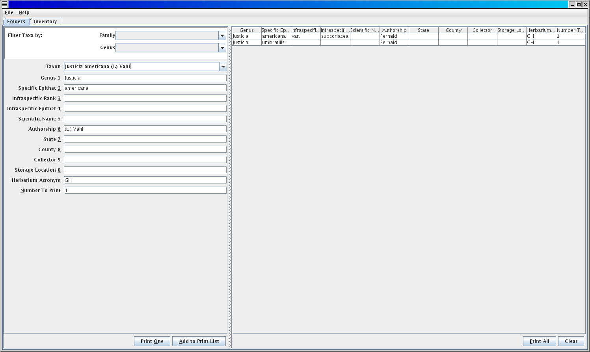
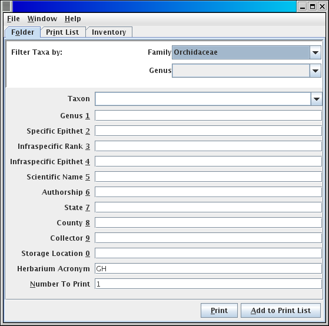
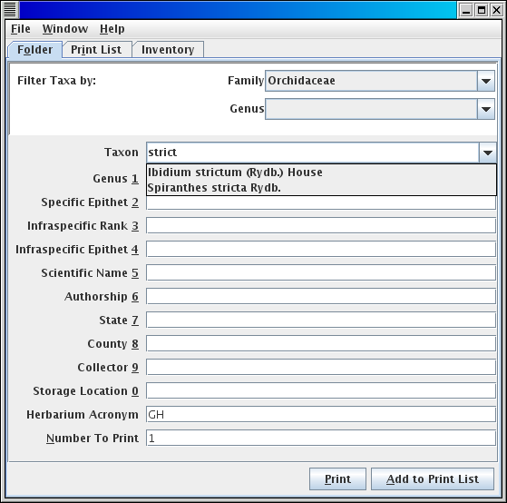
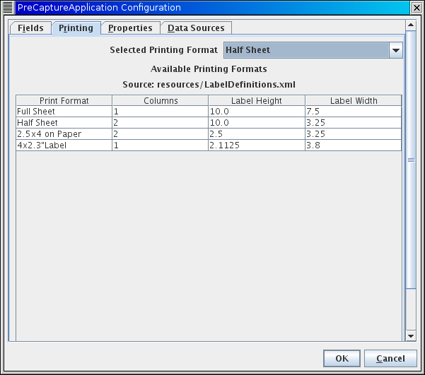

This application is designed to create human and machine readable labels to accompany containers of collection objects (Folders of Herbarium Sheets, Unit Trays of Insects, etc.) into a digitization apparatus where the machine readable information can be extracted at the container level and applied to the digital records of each of the contained collection objects. The purpose of this is to reduce redundant capture of information. For example, all the herbarium sheets in a folder are likely to share a current filed under identification. An initial pre-data-capture pass through the collection can capture this current identification once, print it in machine readable form, and associate that printed information with the folder. Thus, when that folder is brought to a station in a workflow, the machine readable information can be scanned and associated with the image and database record of each specimen in the folder, without the current identification having to be retyped for each sheet. This concept of capturing information from the storage of collection objects prior to data capture and then applying the information to all collection objects from within a given container can be applied within any discipline where multiple collection objects sharing similar information are stored in the same container.
|
|
The pre-capture application has three main functions: First, to capture the information that applies to all specimens within a container. Second, to print out sets of labels or pages (on paper or adhesive label stock) that can be associated with containers such as folders or unit trays. Third, to take a rough inventory of the number of specimens for which pre-capture labels are being generated. These three functions are reflected on the three main tabs of the application.

An alternative view places the form to capture the fields pertaining to a container next to the spreadsheet list of the set of labels to be printed.
The organization of folders of herbarium sheets in cabinets (and other sorts of collection objects in other collections) often follows a taxonomic heirarchy. The taxon pick list can be filtered to reflect this organization. If you are working with a cabinet of herbarium sheets that contains a single family, you can select the family name on the Filter by Family picklist
Once you have selected a family, you can tab into the taxon name picklist and begin to enter any part of the taxon name that is the filed under name for a folder. The taxon name picklist will open showing the taxa within the family, and as you type will filter that list down to names that contain the part of the name that you are typing.
The arrow keys will move you down into the taxon pick list, and tab will pick the current selection (or you can click on a name in the list). Once you have selected a name from the taxon pick list, the fields for that taxon name will be automatically filled in, and you can tab (or use alt and a number key to move directly to a field in the list Alt-9 goes to the 9th item in the list (you can use these key combinations instead of tab to leave the taxon picklist)) to other fields that you want to populate with information that applies to all sheets within the folder. The list of fields is configurable for a project and the number and specific fields present on the form may be different from the screenshots. If you have more than one folder with identical information, you can set the number to print field to the number of copies of the label for that folder that you want to print.

Once you have filled in all the fields that apply to all sheets in the folder that you are working on, you can press Print to print the single label that you have just filled in (in the number of copies specified with by number to print field), at which point a printer dialog will pop up and a pdf file named labels.pdf will be written to the current folder. The pdf file will be written even if you hit cancel on the printer dialog.

The resulting label will print in the currently selected print format (see Print format configuration below).

Alternatively, you can press the Add to Print List button (Alt-A), and add the current label to the list on the Print List tab, where you can modify the information and print larger sets of labels as desired. As with printing a single label, printing a set of labels will bring up the printer dialog and write the labels to labels.pdf

If you switch to the split screen view Window/Change to..., the field list will appear on the left side of the screen, and the print list on the right, all in the same tab. You can switch back and forth between views while retaining the same print list. The print list does not persist between restarts of the program. It is cleared when you exit or when you press the Clear button.

If the inventory functionality has been enabled in your installation (property config.showinventorytab=true), then a tab will show up in the main program screen labeled Inventory. This tab allows you to estimate the number of specimens that are to be imaged within a container. The default configuration is for herbarium cabinets, organized by family, with measurements of how many inches thickness of sheets are present for the folders covered by your project in this cabinet in this family, along with an estimate of how many sheets are found per inch in this family. Follow project protocols for how to use this inventory if your project includes an inventory estimation in the precapture phase.
This functionality is not yet available inside the PreCapture application, see Loading a Taxon Authority File
To exit, use File/Exitfrom the main menu. During a normal exit, backups of the taxon authority file and inventory are made. See: managing backups.
This application is highly configurable. Some of the configuration is accessed through the configuration dialog in the user interface, other elements are in a properties file, others in xml configuration files.
Configuration can be changed in the following places. User marks configurations that are expected to be set by individual users. Administrator marks configurations that are expected to be set at particular deployment sites or for particular projects.
Open the configuration dialog with File/Configuration. Select the Printing tab. From the picklist select the desired configured print format to use. If you need a different format that isn't listed on this screen, see the Editing XML formats section below. You can set the default print format from the Properties tab, by setting the value of the config.selectedprintdefinition property to match the desired default format name.
Construct a csv file with the following columns:
Family,Genus,SpecificEpithet,SubspecificEpithet,InfraspecificEpithet,InfraspecificRank,Authorship
This file must be comma separated, the text fields may optionally be enclosed in quotes. Encoding must be utf-8.
Load this file from the Data Sources tab of the Configuration Dialog (accessed with File/Configuration), by pressing the Load Taxon Authority File button and picking a csv file. The new authority list will be available in the Taxon combo box when you delete all text from the box.
Properties are store in a text file called PreCapture.properties which is created in the application directory. You can edit this file directly, or with the Properties tab of the Configuration Dialog.
To change the main frame from separate tabs for Label and Print List to a split pane, change the property config.mainuiframe from "MainFrame" to "MainFrameAlternative"

Print formats and fields on container labels are controled by XML configuration files. These XML configuration files follow XML schema documents present in the repository.
Default configurations for print format and field list are included in the packaged jar file. Additional configurations can be created and either package in the jar file or placed on the local file system. The PreCapture.properties file contains a property for the location of each of these two configuration files. A relative path will be within the jar, and absolute path on the local file system.
Obtain a copy of the default print format configuration file: http://datashot.svn.sourceforge.net/viewvc/datashot/trunk/precapture_app/src/edu/harvard/mcz/precapture/resources/LabelDefinitions.xml
Save this file to your local file system and edit as desired (e.g. by adding new configurations). See the schema for documentation of each element.
Edit the property config.printdefinitions in PreCapture.properties to point to the absolute path to your new file on your file system.
Test barcode generation using the longest text strings that you expect to generate, and see if the barcodes that are produced are consistently readable from the printer(s) that you are using
Obtain a copy of the default field list configuration file: http://datashot.svn.sourceforge.net/viewvc/datashot/trunk/precapture_app/src/edu/harvard/mcz/precapture/resources/NEVP_TCN_PrecaptureFields.xml
Save this file to your local file system and edit as desired. See the schema for documentation of each element. You must set a new version number in this file if you make any changes.
Edit the property config.fieldmap in PreCapture.properties to point to the absolute path to your new file on your file system.
You Must make a copy of this file available to the software running the digitization apparatus to allow the encoded information to be correctly decoded when the barcodes are read during digitization. The project and version of the configuration file are encoded in the barcode and will be used to match the rest of the barcode to the correct configuration file and the correct decoding of the barcodes into fields.
The Inventory data set and the loaded taxon authority file are backed up to .csv exports each time the program successfully exits. These files are placed in a folder called backups inside the current directory. A new timestamped backup of the inventory file is written each time the program exits, and the inventory and taxon authority file are also both backed up to files named Inventory_backup.csv and TaxonAuthorityFile_backup.csv, overwriting the existing file each time the program exits.
Backups of the taxon authority file and inventory can be reloaded from the Data Sources tab of the Configuration Dialog (accessed with File/Configuration).
Source code for this application can be found in the SourceForge repository for the MCZ's DataShot project. If you wish to help develop this application, please make a request to join the SourceForge project. http://sourceforge.net/projects/datashot/ The source code for the project can be found under precapture_app in the DataShot trunk: http://datashot.svn.sourceforge.net/viewvc/datashot/trunk/precapture_app/